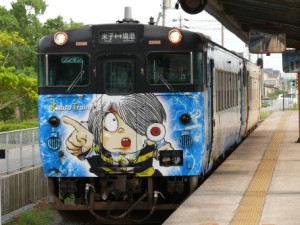
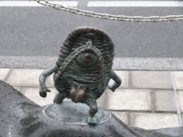
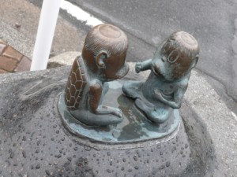
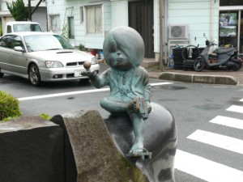
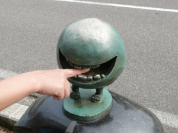
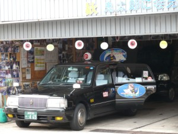
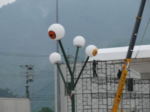
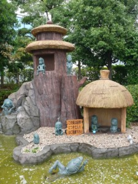
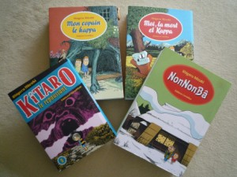

YONAGO
Quittant la ville Kurayoshi, nous sommes partis pour notre prochaine destination, la ville de Yonago, dans un train rapide, qui s’appelle le Tottori liner. La région du côté de la mer du Japon est vraiment calme ou plutôt déserte…mais c’est justement ce qui nous intéresse. Il y a beaucoup de surprises qui se cachent dans les petits endroits!
À la gare de Yonago, par exemple, nous avons trouvé un monument symbolique de cette ville. Il s’agit d’un train qui semble prêt à partir vers le ciel ! Après m’être d’abord demandé ce que cela signifiait, j’ai appris que Yonago était autrefois une ville dynamique et très peuplée, et qu’elle accueillit la première ligne de chemin de fer de la région. Cette ville fut prospère, mais la modernisation plus rapide de la côte Pacifique amorça son déclin.

Nous avons marché sur une grande distance dans la ville, mais rarement rencontré des gens dans la rue. Une rue remarquable que nous avons trouvée est la rue des 9 temples. Il y a littéralement neuf temples construits côte à côte. Si nous avions eu plus de temps, nous aurions pu visiter chaque temple… mais le soleil allait se coucher… dommage !

En retournant à la gare, nous avons pris un dîner dans un petit restaurant avant d’aller à l’hôtel. Cette fois, nous nous sommes logés dans un hôtel de la chaîne Super Hotel. Très raisonnable, et propre. Nous étions très contents de l’avoir choisi et en plus ils servent un bon petit déjeuner !
Yonago Navi (en anglais)
SAKAIMINATO
Sakaiminato est une autre ville située dans le département de Tottori, bien connue pour son grand port de pêche. Mais c’est aussi une ville qui attire beaucoup d’enfants…la ville du manga, Ge,Ge,Ge no Kitaro. Le connaissez-vous ? C’est très populaire au Japon, non seulement parmi les enfants, mais aussi les adultes. Demandez à vos amis japonais, vous verrez, tous le connaissent !
Voilà le train de Kitaro qui vous emmène de Yonago à Sakaiminato. Il y a plusieurs versions de trains comme ça, avec d’autres caractères.


Ge Ge Ge no Kitaro a été créé en 1952 par un artiste manga, Shigeru MIZUKI. Rendez-vous compte ! C’est 1959, et sa création est toujours populaire et lue par les enfants et leurs parents d’aujourd’hui. Moi aussi, quand j’étais petite je le regardais à la télévision, et même maintenant je trouve son histoire très intéressante. Honnêtement, je ne lis pas de manga…et je pense que le manga est pour les enfants. Mais son manga est assez différent.
La version la plus vieille était émise noir et blanc, et depuis bien sûr les épisodes se sont beaucoup modernisés. Celle que je regardais petite était probablement entre les deux !
Dans ce manga, vous rencontrerez de nombreux “yokais /yo ka i/ “, des créatures folkloriques. Ces montres spirituelles sont encore populaires dans notre culture. Certains caractères sont méchants, mais certains sont gentils. En fait, les créatures représentent l’ensemble des personnalités humaines. C’est bien reflété.
L’auteur, Shigeru MIZUKI, qui réside maintenant à Tokyo, a passé toute son enfance Sakaiminato. Il a donc contribué beaucoup à revitaliser sa ville natale, en offrant une centaine de statues de ses yokais.
Vous voyez un homme qui écrit sur le bureau avec deux yokais à son côté ? C’est M. MIZUKI !


La rue de MIZUKI Shigeru, qui s’étend sur à peine 1 km, est pleine de yokais. On dit qu’il y a 139 statues.


Si vous désirez en savoir plus sur ces yokais, visitez le musée MIZUKI Shigeru qui se trouve dans la même rue.


Et ne manquez pas “Ge Ge Ge no Kitaro”, qui est assis quelque part dans la rue ! Il est avec son père, “medama-no-oyaji”, qu’il porte dans sa main…


C’est le monde de M.MIZUKI. Il y a des yokai partout… même en haut des lampadaires…


Voici le parc où on s’est un peu reposé… et ici encore quelques yokai envahissants ! Impossible d’échapper à leur présence !!!

Sakaiminato Tourism office (en anglais) : n’oubliez pas d’obtenir une carte de la ville.
Laissez-moi vous donner maintenant quelques informations supplémentaires au sujet de Ge Ge Ge no Kitaro. Ce manga est traduit en français. Si vous comptez vous rendre dans cette région, je vous conseille d’en lire un ouvrage. Cela rendra la région plus intéressante à découvrir. Je vous recommande aussi son autre ouvrage, Non Non Ba, avec lequel il a gagné le titre de meilleur album du festival international de la bande dessinée, à Angoulême en 2007. Ce n’est pas seulement marrant, car cela montre certains aspects de l’ancien Japon traditionnel. Il rappelle une certaine manière de vivre, une spiritualité que nous avons oubliée dans le monde matérialiste moderne.

Qui sait, les yokai existent peut-être vraiment à Sakaiminato…